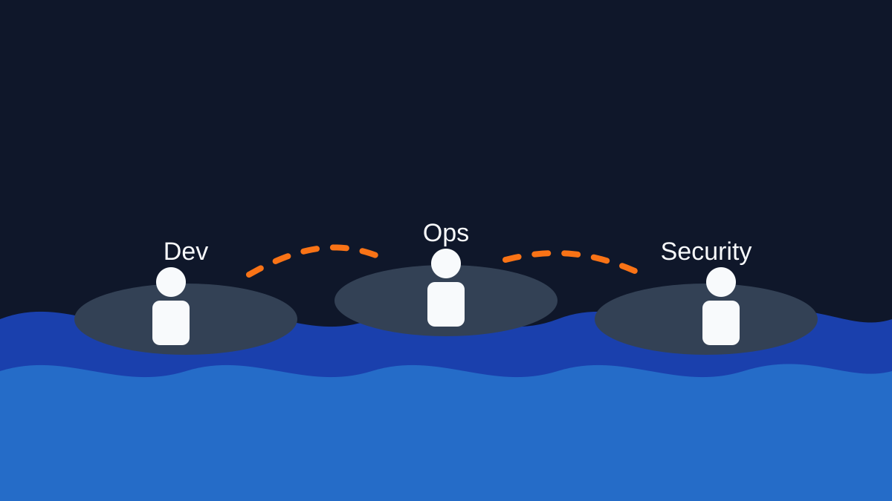
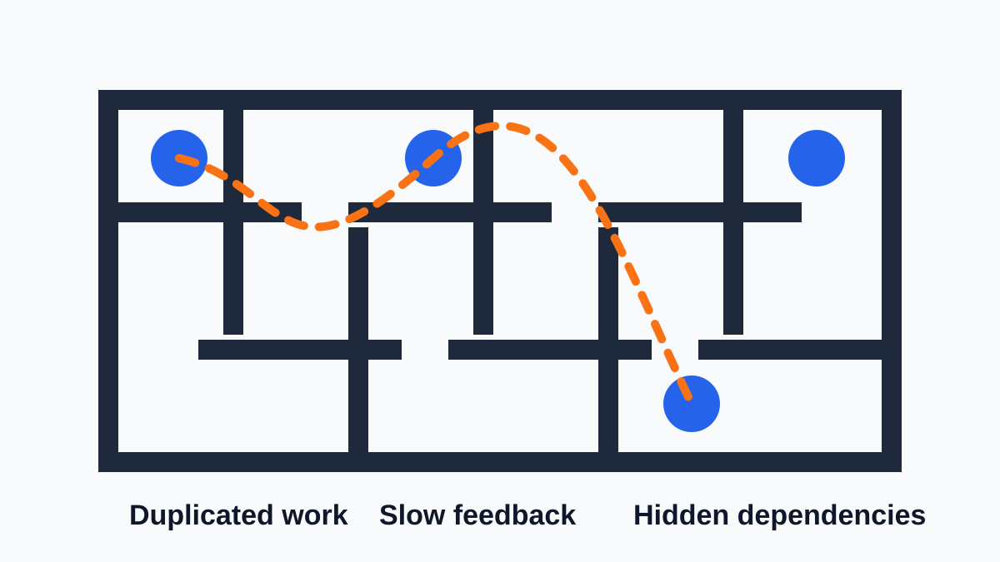
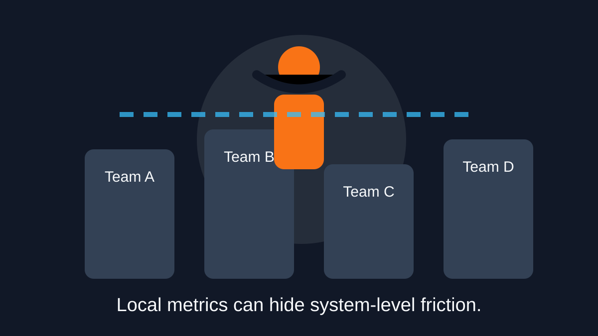
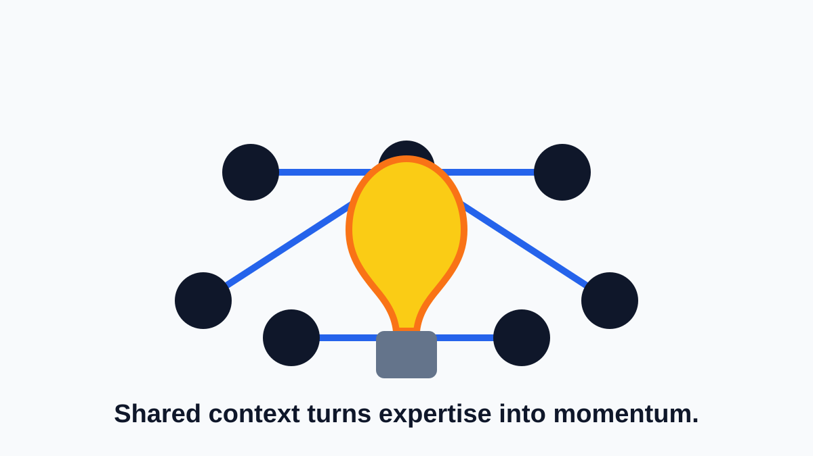
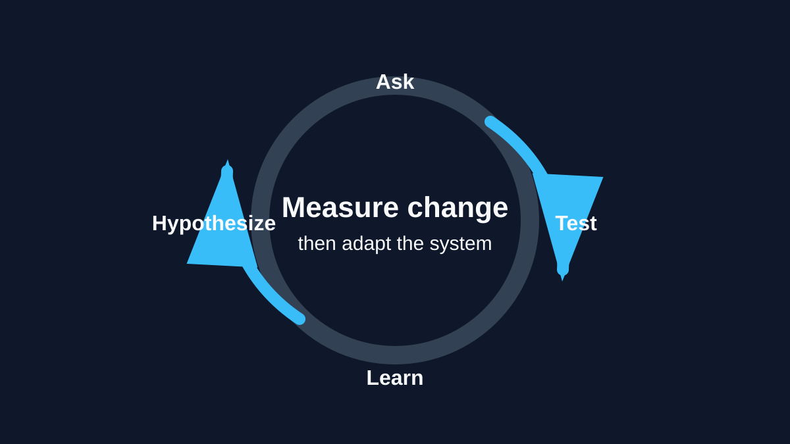
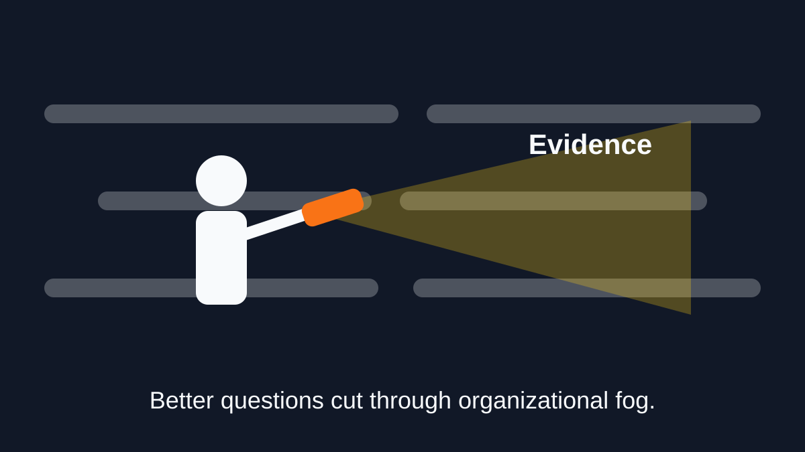
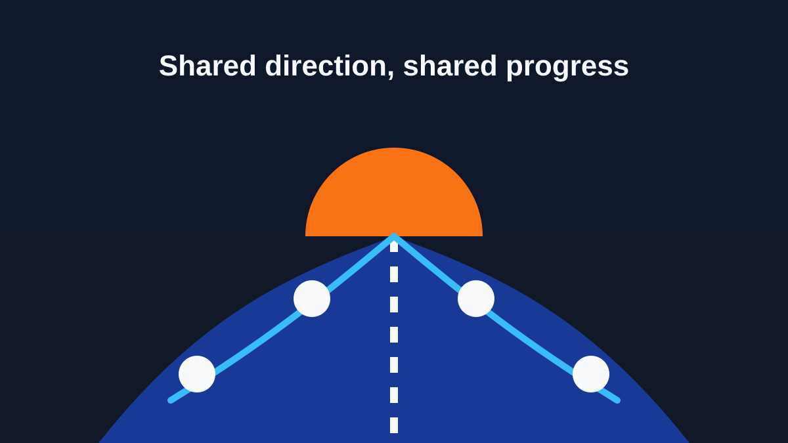

Part 1 of the DevOps Dirty Dozen Series: Divide et impera — divide and conquer.
Insight: Creating silos fragments unity and purpose.
DevOps was supposed to unite us, but too often, it divides us into silos. Silos isolate teams, stifle communication, and undermine the very principles DevOps was built upon. Why do these silos exist? What makes them so destructive? And how can we tear them down to deliver on DevOps’ promise of collaboration and innovation?
In this first article of the DevOps Dirty Dozen, we delve into DevOps silos, their origins, their impact, and strategies to break free.
Originally published on LinkedIn.

Silos leave teams close enough to see each other, but too disconnected to move together.
The Anatomy Of Silos
Silos are more than physical barriers. They are ingrained mindsets and practices that divide teams and departments. Here is what they look like:
- Office silos: Physical separation between teams creates barriers to collaboration. For example, when the development team is on one floor and operations is on another, communication naturally dwindles.
- Functional silos: Teams work in isolation based on their roles. Development, Security, and Operations often act as independent entities rather than cohesive parts of a whole.
- Generational silos: Misunderstandings arise between younger and more seasoned staff, with each group perceiving the other as less effective.
These silos create invisible walls that hinder the flow of information, innovation, and progress.

Siloed work creates extra paths, duplicate effort, and slow feedback.
The Cost Of Silos
Silos do not just inconvenience teams. They actively harm organizations.
- Wasted time and redundancy: Teams solve the same problems differently, duplicating effort and wasting resources. Communication dead zones make this worse.
- Missed opportunities: Without cross-team collaboration, work in one department that could expedite solutions elsewhere often goes unnoticed.
- Unhealthy competition: Teams compete for resources and recognition, prioritizing their success over the organization’s goals.
- Poor customer experience: Disconnected teams result in fragmented solutions, leaving clients to navigate internal inefficiencies.
- Lower morale and trust: Tribalism fosters disengagement. Teams feel isolated and disconnected from the organization’s greater mission.
A Real-World Example: The Fallout Of Siloed Teams
Consider the infamous Healthcare.gov launch in 2013. The platform’s development involved multiple contractors and government agencies, each working in isolation without proper communication or integration. These silos led to catastrophic results: system crashes, a poor user experience, and political backlash.
The lack of collaboration between teams meant critical integration testing was not completed, leaving the system vulnerable to failure under real-world conditions. This high-profile failure highlighted how silos can derail even the most critical initiatives.

Leadership blind spots can preserve silos even when everyone is trying to improve delivery.
Why Silos Develop In The First Place
Silos are not built overnight. They emerge from systemic issues. Here are seven common causes:
- Leadership blind spots: Leaders unknowingly manage silos instead of dismantling them, focusing on isolated metrics rather than holistic collaboration.
- Incentive structures: Misaligned goals encourage teams to prioritize their success over the organization’s objectives.
- Lack of communication systems: Without shared channels for regular interaction, teams resort to information hoarding.
- Fear: Teams isolate themselves out of fear: fear of failure, criticism, or overstepping boundaries.
- Cultural inertia: “We have always done it this way” perpetuates division.
- Resource scarcity: Competing for limited resources reinforces isolation.
- Over-specialization: Highly specialized teams focus narrowly on their domain, neglecting the broader organizational picture.

Collaboration turns isolated expertise into shared learning and better outcomes.
Breaking Down Silos
To eliminate silos, organizations need a structured approach:
- Foster open communication: Create shared channels and forums for regular cross-team interaction.
- Align incentives: Design goals that reward collaboration and shared success.
- Empower leadership: Equip leaders to recognize and address silo behaviors.
- Encourage transparency: Share successes and failures openly to build trust.
- Invest in cross-functional projects: Encourage teams to collaborate on initiatives that span multiple disciplines.

Treat organizational improvement as an experiment: ask, test, measure, and adapt.
Applying The Scientific Method
Breaking silos requires experimentation and critical thinking, much like the scientific method:
- Ask questions: Why do silos exist in your organization? What is their impact?
- Form hypotheses: What specific actions could reduce or eliminate silos?
- Test solutions: Pilot changes like cross-team meetings or shared goals.
- Analyze results: Did these changes improve collaboration and outcomes? Refine as needed.

Clear evidence helps teams challenge assumptions and move through uncertainty.
Carl Sagan’s Baloney Detection Kit
To challenge assumptions about silos, apply Carl Sagan’s Baloney Detection Kit:
- Encourage debate: Are silos truly necessary, or are they remnants of outdated thinking?
- Demand evidence: What data supports the effectiveness of silos or their removal?
- Test assumptions: Experiment with breaking silos and measure the results.

Breaking silos is not a one-time fix. It is a commitment to moving forward together.
Moving Forward Together
Silos are not inevitable. With intentional leadership, structured communication, and a commitment to collaboration, DevOps teams can achieve the unity that drives innovation.
What is your experience with DevOps silos? How has your team overcome them? Let us share insights and solutions to break down barriers and deliver on the promise of DevOps.